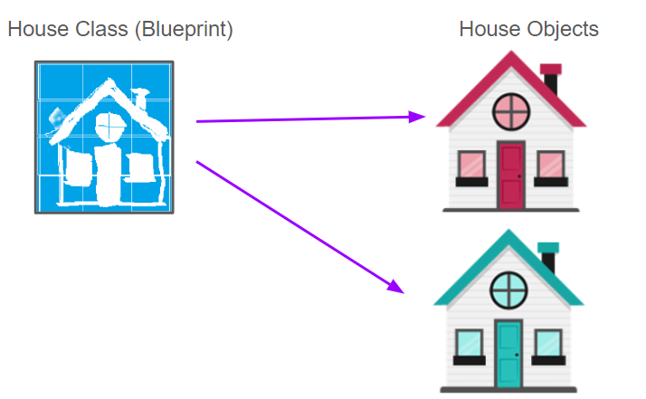
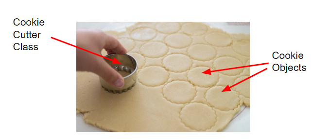
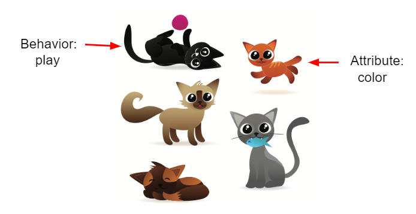
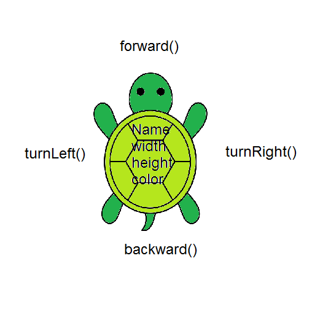
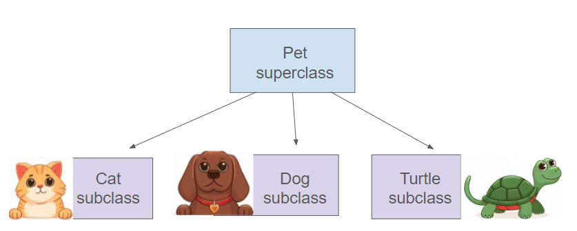
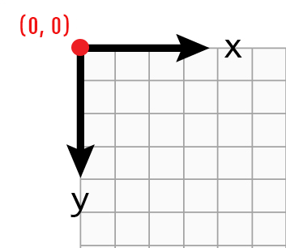

1.12 Objects: Instances of Classes
Using Objects and Methods
Course Directory
Return to the course outline
Topic Intro
Java is object-oriented
Java is an object-oriented programming language. One main way to design Java programs is in terms of objects (对象).
Objects combine:
- data
- code that operates on that data
To create objects, Java first defines a class (类), which provides a blueprint for creating objects.
Classes and Objects
Blueprint and instance


A class is like a blueprint or cookie cutter. An object is a specific thing created from that class.
Objects are instances (实例) of the class.
Class as Data Type
Reference types can declare variables
A class can define a new data type. The Turtle class can be used to declare turtle variables.
Just as int variables hold numbers, Turtle variables can refer to animated turtle objects.
Class-type variables are reference variables.
Attributes and Behaviors
What an object knows and does
A class defines the attributes and behaviors that objects of that class can have.
- Attributes are data or properties an object knows about itself.
- Behaviors are actions an object can do.
- Behaviors are implemented by methods.
- Each object has its own values for attributes.
Example: a turtle object has color and position, and it can move or turn.
Cat Objects
Same class, different attribute values

Cats as objects with shared structure
Student response task:
- Name at least 3 cat attributes.
- Name at least 3 cat behaviors.
- For one visible cat, give an attribute value.
Attributes are often nouns or adjectives; behaviors are often verbs.
Turtle Object Model
Concrete object-oriented vocabulary

Turtle attributes and methods
name,width,height, and color are attributes.forward(),backward(),turnLeft(), andturnRight()are methods.- Methods define behavior.
The Turtle class makes object state and behavior visible.
Vocabulary Check
Match the concept
| Definition | Concept |
|---|---|
| a specific instance of a class with defined attributes | object |
| defines a new data type and acts like a blueprint | class |
| what the object knows about itself | attributes or instance variables |
| what an object can do | behaviors or methods |
Use this vocabulary before writing Turtle code.
Quick Checks
Class and object reasoning
| Question | Answer |
|---|---|
| How many objects can you create from a class? | as many as needed |
| What specifies object behavior in Java? | methods |
| What are object data or properties called? | attributes |
One class definition can create many objects.
Turtle Class
Create and use a turtle object
yertle is an object created from the Turtle class.
Dot Operator
Ask an object to execute a method
The dot operator . runs an object’s method.
yertle.forward()asksyertleto move forward by the default amount.yertle.forward(50)passes an argument and asksyertleto move 50 pixels.- Parentheses are required even when the argument list is empty.
Code Task
Change the turtle movement
In the starter code, yertle goes forward and turns left. Change it to make yertle go forward twice and then turnRight.
Completion checks:
- at least two
yertle.forward()calls - at least one
yertle.turnRight()call
Reference Variables
Object variables hold references
A variable of a reference type such as Turtle holds an object reference, which can be thought of as the memory address of that object.
Contrast:
- primitive variables such as
inthold one simple value - object references point to complex objects with many attributes
Creating Multiple Objects
One class, many instances
Use the pattern:
Example:
Each turtle can move independently while sharing the same class definition.
Code Task
Add another turtle
Add a third turtle object to this program.
Completion check: at least three occurrences of new Turtle(habitat).
Inheritance Boundary
Useful vocabulary, not the main AP focus here

Inheritance hierarchy
Inheritance lets a subclass reuse attributes and behaviors from a superclass.
- superclass: more general class
- subclass: more specific class
- all Java classes are subclasses of
Object
Designing and implementing inheritance relationships is outside the AP CSA course and exam scope here.
Turtle Methods
Class diagram and method list

Turtle UML class diagram
Use the class diagram to identify:
- attributes stored by the turtle
- methods the turtle can execute
- which methods require arguments
Turtle Coordinates
Screen coordinates are not Cartesian

Turtle coordinate system
The Turtle world uses screen coordinates.
(0, 0)is at the top-left corner.xincreases to the right.yincreases downward.- A new turtle begins facing north, toward the top of the page.
Mixed-Up Code
Draw a digital 7
Put the code blocks in order. The turtle should draw a line upward, turn left, and draw another line.
Remember: a turtle starts facing north.
Code Task
Type the digital 7 program
After ordering the blocks, type the same movement into the starter program.
Required sequence: forward, turnLeft, forward.
Code Task
Draw a digital 8
Make yertle draw the digital number 8 as two squares stacked on top of each other.
Completion checks: at least 7 calls to forward and at least 5 turns.
Groupwork Coding Challenge
Draw letters
Working in pairs, use a turtle to draw simple block-style initials using straight lines.
Allowed methods:
forward()turnLeft()turnRight()backward()penUp()penDown()
Act out the code as the turtle before running it.
Groupwork Coding Challenge
Turtle Letter starter
A strong solution should create a turtle object and contain at least 20 lines of code, including meaningful movement and pen commands.
AP-Style Quick Checks
Object vocabulary
Dog class example:
breed,age, andnameare attributes.- an object
petdeclared as typeDogis an instance of theDogclass.
Party class example:
numOfPeople,discoLightsOn, andpartyStartedare attributes.myPartyis an instance of thePartyclass.
Do not confuse an object’s name with one of its attributes.
Classroom Check
A complete answer should…
- define class, object, and instance
- explain that a class defines a new reference type
- distinguish attributes from behaviors
- explain that object variables hold references
- use
new ClassName(arguments)to create an object - use the dot operator to call an object’s methods
- read Turtle screen coordinates correctly
- explain inheritance vocabulary while keeping it outside the main AP implementation focus